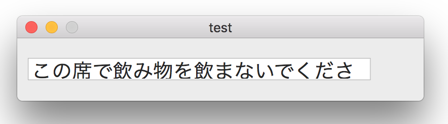

ユーティリティなツールとして使用できるカテゴリ
NSBezierPathをCGPathに変換する
カテゴリ名：
NSBezierPath (MyBezierPath)
メソッド名：-cgPath
接頭語 "CG"は、Core Graphics frameworkの略で、2次元描画を行うフレームワークのこと。CGPathは2次元図形の数学的記述のことで、これに基づいてCore Graphicsは図形をビューに描画する。
NSBezierPathも二次元図形を描画するためのクラス。Core Graphicsのラッパーで、よりオブジェクト指向的な使い方ができる。CGPathと同様に2次元図形を数学的に記述することにより描画を行う。（図形をベジエ曲線として記述するためこのような名前になっている）
アプリケーションの仕様によっては、NSBezierPathをCGPathに変換する必要がある。例えば、NSBezierPathで作成した図形をCAShapeLayerのpathプロパティに代入するといったケース。そのために、NSBezierPathオブジェクトをCGPathオブジェクトに変換するcgPathメソッドをカテゴリにより提供する。
（参考）似たような関係で、NSColorオブジェクトをCGColorオブジェクトに変換するメソッドCGColorは、Cocoaフレームワークで提供されている。
ビューに格子を描画するCAShapeLayerオブジェクトを作成する
カテゴリ名：
CAShapeLayer (MyShapeLayer)
メソッド名： -layerGridInRect:atInterval:width:
引数に格子の間隔と線の太さをピクセル単位に指定して、CAShapeLayerオブジェクトを作成する。オブジェクトをビューのサブレイヤーに追加すれば、ビューに格子状の線を描画することができる。
ビューのデザインを行うときに、コントロールを配置する場所（座標点）をピクセル単位に把握することができる。
使用方法
NSColorクラスのカテゴリ
カテゴリ名：
NSColor (MyColor)
（1） RGB値を指定してNSColorオブジェクトを作成する
メソッド名： +myColorR:G:B: / +myColorR:G:B:alph:
RGB値を0〜255の範囲で指定する。透明度（alpha値）を0〜1の範囲で指定する。
使用方法
（2）RGB値を指定してCGColorを作成する。
メソッド名： +cgColorR:G:B: / +cgColorR:G:B:alph:
RGB値を0〜255の範囲で指定する。透明度（alpha値）を0〜1の範囲で指定する。CGColorCreate関数を使用してRGB値からCGColorを作成する。
使用方法
NSColorクラスのカテゴリにデフォルトで定義済みの CGColorメソッドは、NSColorオブジェクトを CGColorRef に変換するものだが、
RGB値を指定して作成したNSColorオブジェクトには対応していない。エラーにはならないが意図した色にならない。
下記の例からわかるのは、NScolorオブジェクトは色の作成方法によって、実体としては異なるクラスになる。そして、CGColorメソッドが対応しているのは特定のNScolorクラスだけのようだ。
文字列の大きさに合わせてNSTextFieldオブジェクトのframeサイズを変更する
カテゴリ名：
NSTextField (MyTextField)
メソッド名： -setText:
テキストフィールドの幅と高さ（frameサイズ）は表示する文字列とフォントによって決まる。
表示する文字列の内容が実行時に決まる場合、フォームのデザイン時に、あらかじめサイズを決めることはできない。
このメソッドは引数に文字列（NSStringオブジェクト）を指定すると、文字列とテキストフィールドが持つフォントの種類から、表示に必要なテキストフィールドの幅と高さを計算し、自身のframeサイズを変更する。実行時に文字列の内容が変わっても、frameサイズは文字列に応じて自動的に変えることができる。
使用方法
・frameサイズがゼロのテキストフィールドオブジェクトを作成する。任意のフォントをセットする。
・適当な文字列を作成してテキストフィールド表示する。
結果

ところが、幅、高さとも必要なサイズが不足する。原因不明。
NSArrayクラスへのメソッド追加
NSArrayクラスにアプリケーション独自の操作を追加したいとき、カテゴリを利用することができる。
次の配列（NSArrayオブジェクト）は、配列の要素はカスタムクラス（Person）のオブジェクトとし、独自のイニシャライザと検索メソッドを追加する。
イニシャライザは、Personのオブジェクトの元となるデータを読み込み、Personオブジェクトを作成し、配列の要素に追加する。
検索は、Personオブジェクトのメンバ（性別、誕生日）から、条件に合った要素を返却するものである。
なお重要な点として、カテゴリは対象のクラスに独自のインスタンス変数を定義できないことを明記しておく。
カテゴリの宣言
使用方法
カテゴリにメソッドを追加するテクニックは、実装は容易だが、元のクラスに対してどのような機能が追加されているのか分かりづらいという欠点がある。
上記のカテゴリの例でいえば、Personオブジェクト以外の要素を配列をに追加し、カテゴリの検索メソッドを実行することは、コンパイルも通るので可能であるが、実行時エラーとなる可能性が高い。カテゴリの使用にあたってカテゴリの実装の中身まで理解しなければならないというのは、オブジェクト志向の考え方から外れたところがある。
[備忘録] クラスを拡張する方法は一般的に次の二つである。
・元のクラスのサブクラスを作成する（継承）
・カスタムクラスを作成し、元のクラスのオブジェクトをメンバとして持つ（合成）
ただし、NSArrayに関しては、
NSMutableArrayクラスは、クラスタークラスなので、サブクラス化は不可である。NSArrayクラスは、おそらくサブクラス化できるみたいだが、要素の追加や削除ができないのでは、あまり使い道がない。